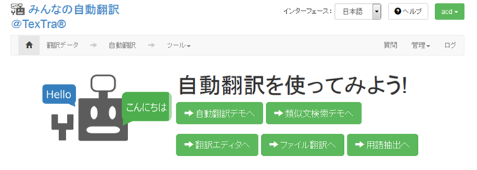

みんなの自動翻訳
TexTra Trados AddinはWebサイト「みんなの自動翻訳」と連携して機能を実現します。
API設定画面では連携するためのパラメータを入力します。
https://mt-auto-minhon-mlt.ucri.jgn-x.jp/
「みんなの自動翻訳」はブラウザ上で翻訳を行うためのWebサイトです。
翻訳を補助する機能・データを
TexTra
Tradosから呼び出して利用します。
（以降、サイト「みんなの自動翻訳」を「Webサイト」と呼びます。）
